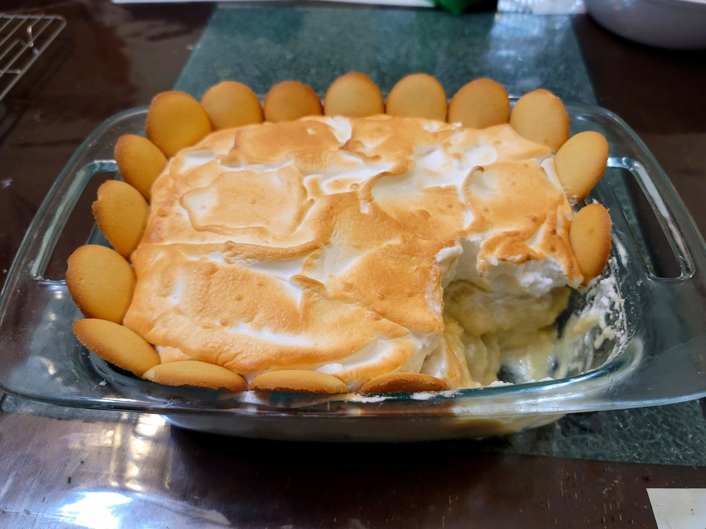

Banana Pudding

Ingredients:
Pudding:
- 1 12 oz can Evaporated milk
- 1/2 - 1 cup Sugar, or to taste (may depend heavily on ripeness of the bananas and brand of vanilla wafers)
- 1/2 cup Flour
- 1/8 tsp Salt
- 6 Egg yolks, whites reserved for the meringue
- 2 1/3 cup Half and half
- 2 tbsp Butter
- 1 tbsp Vanilla extract
- ~1 11 oz box Vanilla wafers
- 4 Bananas, sliced
Meringue:
- 6 Egg whites
- 6 tbsp Sugar
- 1 tsp Vanilla extract
- 1/2 tsp Cream of tarter
Instructions:
- Combine the evaporated milk, sugar, flour and salt into a large saucepan and whisk until dissolved. Place over medium-high heat.
- While it starts to heat, combine the egg yolks and the half and half into a large bowl and whisk together. Whisk in some of the evaporated milk mixture and then slowly pour the egg mixture into the saucepan while whisking constantly.
- Cook while whisking the mixture constantly for about 10-15 minutes or until it thickens and forms a custard. Then remove from the heat whisk in the butter and vanilla extract.
- Layer a 7x11" baking dish with vanilla wafer to coat the bottom of the dish. Then add a layer of bananas, and then 1/2 of the custard. Then repeat, finishing off with the rest of the custard.
- To make the meringue, add all the meringue ingredients to a large mixing bowl. With and electric hand mixer, beat the mixture until it forms stiff peaks.
- Top the custard with the meringue. Place into a broiler and broiler just until the meringue looks toasted. Optionally, garnish with more vanilla wafers. Serve either hot or cold.